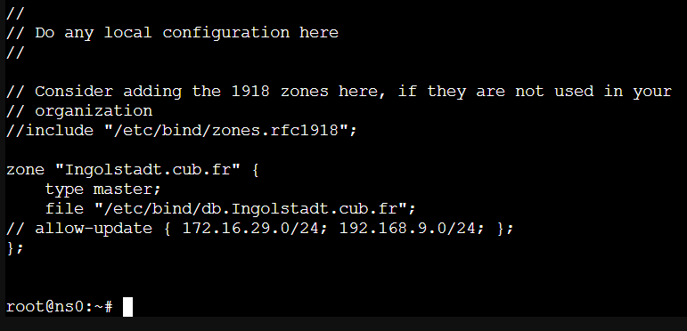
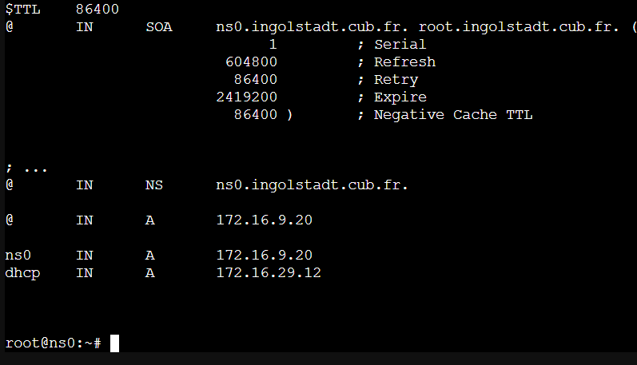
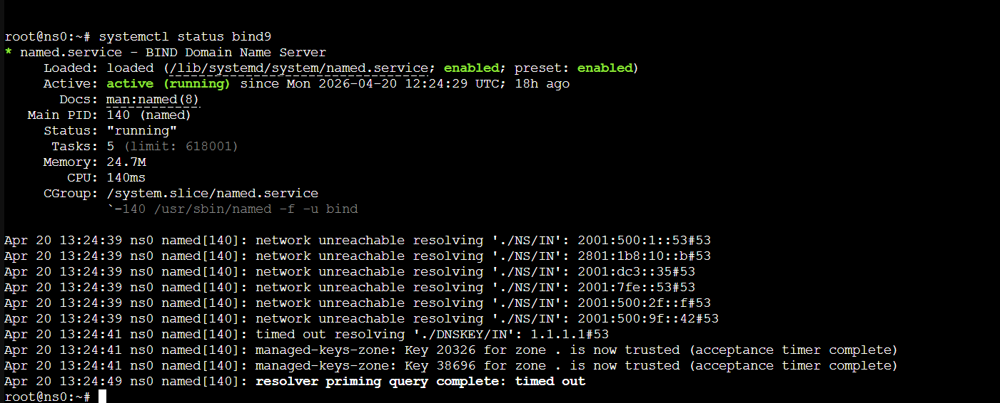
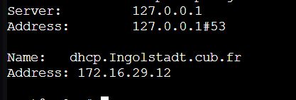

Projet : Résolution de noms (FQDN) pour l'infrastructure CUB
Date : Mars 2026
Environnement : Debian (VM) sur Hyperviseur Proxmox
Le service DNS (Domain Name System) est un annuaire essentiel au réseau. Il permet de traduire les noms de domaine lisibles par les utilisateurs (ex: ns0.ingolstadt.cub.fr) en adresses IP compréhensibles par les machines, et inversement.
Le serveur DNS doit posséder une adresse IP statique connue de tous les postes du réseau.
1. Installation des paquets
Nous utilisons le paquet Bind9, qui est le standard industriel pour les serveurs DNS sous Linux, ainsi que dnsutils pour les outils de test.
2. Configuration des redirecteurs (Forwarders)
Fichier : /etc/bind/named.conf.options
Si notre serveur DNS local ne connaît pas une adresse (ex: google.com), il doit transférer la requête à un DNS public.
3. Déclaration des zones locales
Fichier : /etc/bind/named.conf.local
C'est ici que l'on déclare notre zone directe pour le domaine.

Capture d'écran du fichier /etc/bind/named.conf.local
4. Création du fichier de zone directe
Fichier : /etc/bind/db.Ingolstadt.cub.fr
C'est l'annuaire principal de notre entreprise. On y associe les noms de nos serveurs à leurs adresses IP (Enregistrements de type A).

Capture d'écran du fichier de zone directe (db.Ingolstadt.cub.fr)
1. Vérification de la syntaxe et redémarrage :

Vérification de l'état du service Bind9 (Active: running)
2. Test de résolution :
On utilise l'outil nslookup pour vérifier que le DNS traduit correctement le nom de notre serveur DHCP.

Test de résolution réussie : la commande "nslookup dhcp.ingolstadt.cub.fr" renvoie bien l'IP 172.16.29.12
✅ Le service DNS est fonctionnel et résout les requêtes de l'entreprise !